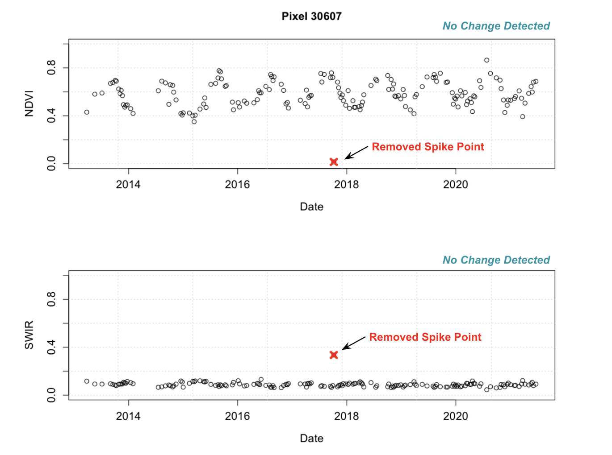

MUTATED
Modeling and Understanding using Temporal Analysis of Transient Earth Data
As a part of my research assistantship, I am a member of the MUTATED team. The MUTATED team is part of IARPA's (Intelligence Advanced Research Projects Activity) Space-Based Machine Automated Recognition Technique (SMART) Program working to automate broad-area search of multi-source satellite imagery to detect, monitor, and characterize the progression of anthropogenic or natural processes.To address this goal, our team has been working extensively on the development of a novel online change detection algorithm. This algorithm, termed roboBayes, was based on the established Bayesian Online Changepoint Detection Algorithm (BOCPD, Adams and MacKay 2007) but created and implemented specifically for remote sensing change detection by team member Laura Wendelberger (Wendelberger et. al 2021). My work on this algorithm is outlined below:
Outlier Detection
To help address the issue of outliers in our data, due to clouds or other sources of atmospheric interference, I implemented two different spike filter options in the pre-processing portion of the roboBayes pipeline. The first, is a lagging spike filter which uses a moving window of the previous values compared to the next data observation in order to flag a spike, or outlier, that is outside of a set standard deviation threshold. The second spike filter, is a traditional moving window spike filter where the moving window looks at the center data point of the window and flags a spike, or outlier, that is outside of a set standard deviation threshold.
Heuristics-Based Filtering
To aid in eliminating false positives and classifying changes related to heavy construction, I developed a heuristics-based
filter in the post-processing portion of the roboBayes pipeline. To determine what remote sensing signals and model
coefficients were indicative of heavy construction, I performed unsupervised K-means clustering of all
model coefficients across multiple regions for all signals that contained a change point. These coefficients included the model mean,
amplitude, and variance for each signal. This helped me to target signals that were most important for heavy construction
classification to create a parameter filter that improved our precision across regions while still maintaining high levels
of recall.

Tuning: Paramter Grid Search
To tune the roboBayes algorithm and find the best parameter set, I performed a grid search and set of tuning runs
for the spike filter and between the spike filter and observation variance. This was performed across multiple
regions and geographic terrains to try and find the best generalizable parameter set. Runs were completed using
the NCSU High-Performance Computing (HPC) cluster.